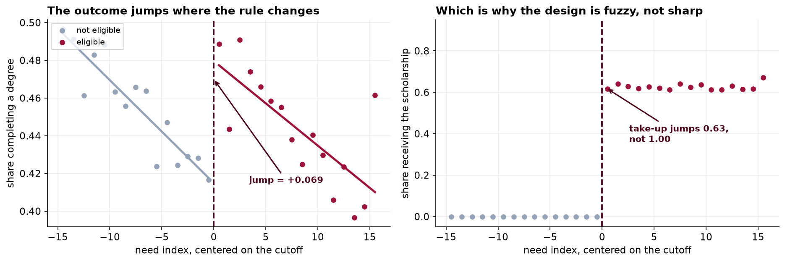
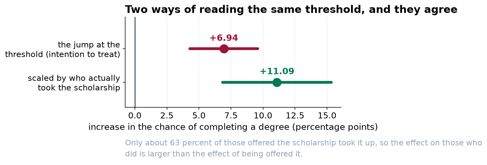

The Scholarship Works. The Obvious Number Says It Does Not.
Recipients graduate less often than non-recipients, and the scholarship still raises graduation by about eleven points. Both of those sentences are true, and only one of them is an effect.
Recommendation
Reauthorize the scholarship. Our best estimate is that receiving it raises the chance of completing a degree by about 11 percentage points, from roughly 45 to roughly 56. Two independent methods give 10.6 and 11.1 points, and the margin of error on each is about 4 points either way. Ignore the raw comparison, which shows recipients graduating 3.5 points less often. That number is real and it is not an effect of the scholarship.
Why the raw comparison is backwards
The scholarship is means tested. It goes to students from poorer families, and those students face more obstacles to finishing a degree for reasons that have nothing to do with the award. Comparing recipients with non-recipients therefore compares two different populations, and the difference between them is mostly the difference in their circumstances.
Adjusting for the things we record, such as family income, does not fix this, and a companion study in this series shows in detail why not. So we did not try. Instead we used two features of how the program is administered.
Method one: students either side of the cutoff
Eligibility is decided by a need index with a threshold at exactly 60. A student who scores 59.9 and a student who scores 60.1 are, for every practical purpose, the same student. One is offered the award and the other is not, because of where a line was drawn.
Comparing those two groups gives a clean answer. We checked the two things that could undermine it: whether families were somehow pushing their score across the line, and whether anything else about students changes at 60. Neither shows any sign of a problem.

Method two: the allocation formula
Places are allocated to high schools by a formula using enrollment counts three years out of date. Two similar schools can end up with quite different allocations for no reason connected to their students, and take-up among eligible students doubles from the least to the most generously allocated schools, from 42 to 82 percent.
That gives a second way in, using different students and a completely different logic. It gives 10.6 points against the first method's 11.1.
The two approaches rely on entirely different things being true. One relies on the cutoff being arbitrary; the other relies on the funding formula being unconnected to student outcomes. They would both have to be wrong, in unrelated ways, by almost exactly the same amount, for them to agree by accident. That is what makes two similar numbers worth something.

What we are not saying
- This is not a forecast for widening eligibility. Both methods measure the effect for students near the current threshold, or for students whose award depended on their school's allocation. Students who would newly qualify at a lower threshold are a different group and may respond differently.
- We cannot rule out every objection to the second method. A school's enrollment three years ago might reflect something about its neighborhood that also affects graduation. We found no evidence of that, and no analysis can settle it conclusively.
- The intervals are wide, and honestly so. The first method deliberately uses only the students near the threshold, about a third of the registry. Credibility was bought with precision.
One finding that is not about the effect
A funding formula running on three-year-old enrollment counts is currently determining which eligible students receive an award. Take-up ranges from 42 percent to 82 percent across schools for that reason alone. Whatever the effect estimate, that is a rationing outcome nobody chose, and it is worth a separate conversation.